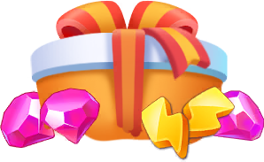
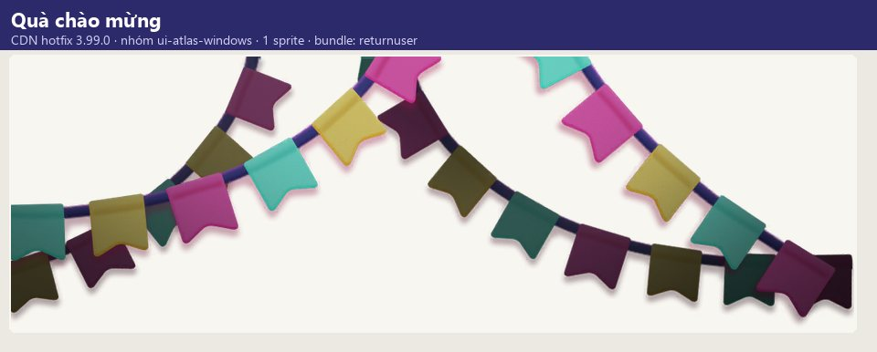
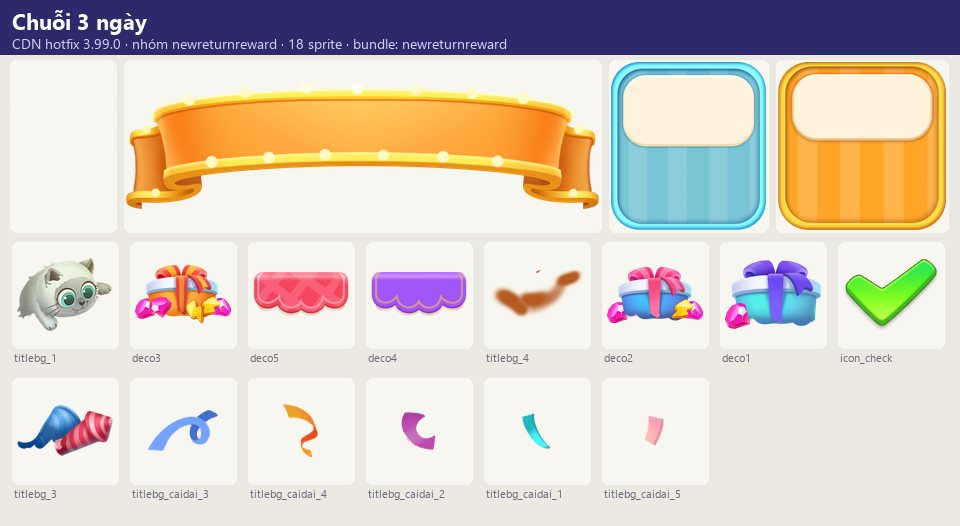

Tài nguyên hình ảnh
Người chơi vắng mặt một thời gian khi quay lại nhận màn 'WELCOME BACK!' với gói quà chào mừng (ReturnUserRewardWindow) và chuỗi quà 3 ngày (NewReturnReward:…
Mô tả
- Người chơi vắng mặt một thời gian khi quay lại nhận màn 'WELCOME BACK!' với gói quà chào mừng (ReturnUserRewardWindow) và chuỗi quà 3 ngày (NewReturnReward: DAY 1/2/3, ngày sau tốt hơn) để tái kích hoạt thói quen đăng nhập.
- Phối hợp với thông báo comeback (168 giờ hứa quà).
Còn thiếu / chưa xác minh
Mở khóa & điểm vào
Server xác định người chơi quay lại (bảng returnUser).
Điểm vào:
- Popup khi vào game sau thời gian vắng
Cách hoạt động
- Đăng nhập sau thời gian vắng → server đánh dấu returnUser → ReturnUserRewardWindow ('We missed you lots!') nhận quà; hoặc NewReturnRewardWindow hiển thị 3 ngày quà, nhận quà ngày hiện tại (Collect) và nhắc quay lại ngày mai để nhận quà tốt hơn.
Luồng chi tiết theo code
Đăng nhập sau thời gian vắng → server đánh dấu returnUser → ReturnUserRewardWindow ('We missed you lots!') nhận quà; hoặc NewReturnRewardWindow hiển thị 3 ngày quà, nhận quà ngày hiện tại (Collect) và nhắc quay lại ngày mai để nhận quà tốt hơn.
Tài nguyên hình ảnh (6)
4 ảnh tài nguyên trong APK; 2 bảng sprite trích từ bundle sự kiện trên CDN hotfix 3.99.0 (mỗi bảng là một chủ đề/biến thể; sprite rời, không phải màn hình đã dựng). Bấm ảnh để phóng to; nhãn UC dẫn tới use case tương ứng.








Use case (2)
Bấm vào từng use case để mở. Mở/đóng tất cả
UC-01 Quà chào mừng
Các bước- ReturnUserRewardWindow
- Nhận quà
| Actor | Player |
|---|---|
| Trigger | Vào game sau thời gian vắng |
| Điều kiện | Đủ điều kiện quay lại |
| Kết quả | Quà chào mừng |
| Quy tắc / số liệu | — |
| Evidence | text return_user_reward_window_* |
Cấu hình (1)
Gộp mọi nguồn: const trong code, JSON mặc định trong Resources, bảng static, storage key, AB test, cờ server.
| Nguồn | Key | Kiểu | Giá trị | Ý nghĩa | Nơi định nghĩa |
|---|---|---|---|---|---|
| storage key | returnUser | table | — | Trạng thái người chơi quay lại | CSDL SQLCipher |
Giao diện (UI)
| Element | Class | Mục đích |
|---|---|---|
| Chào mừng | ReturnUserRewardWindow, NewReturnRewardWindow |
Storage keys
returnUser
Chưa đọc được / ghi chú
- Ngưỡng ngày vắng mặt và nội dung quà do server
Tính năng liên quan
Nguồn đã đọc
- notes/packs/ReturnUser.md